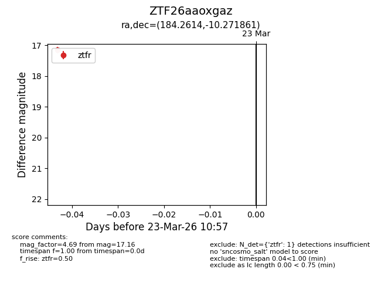
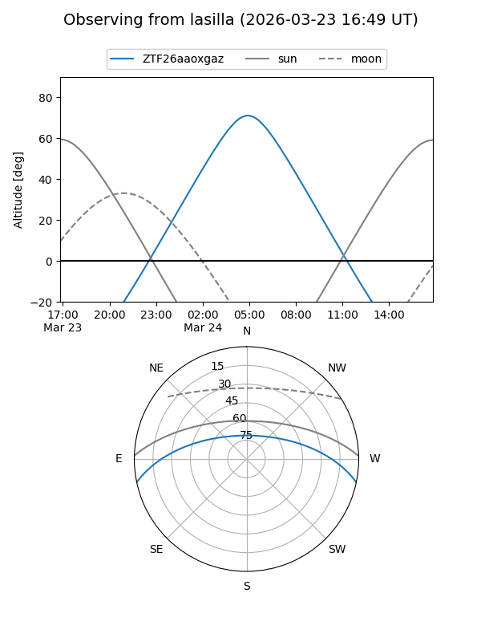
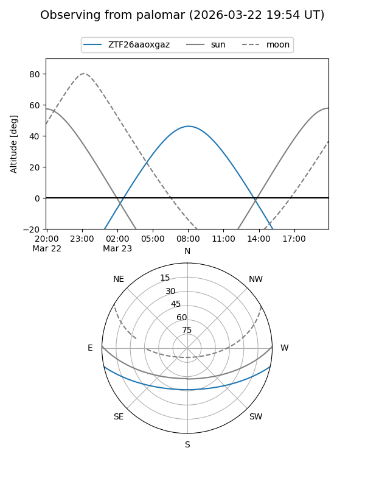

ZTF26aaoxgaz
Target ZTF26aaoxgaz at 2026-03-23 11:00
Aliases and brokers:
FINK: link
Lasair: link
ALeRCE: link
alt names
ZTF26aaoxgaz (ztf,fink_ztf)
Coordinates:
equatorial (ra, dec) = 184.2614,-10.27186
equatorial (HMS+DMS) = 12:17:02.73,-10:16:18.70
galactic (l, b) = (289.2074,+51.68106)
Flags:
Photometry:
last ztfr=17.16
1 ztfr detections
Lightcurve

Visibility


Additional plots